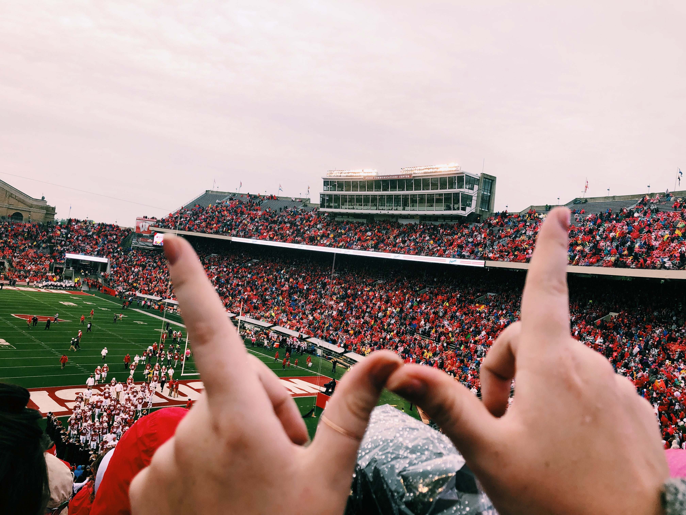

My name is Kaitlynn Ellis and I am currently a junior at the University of Wisconsin-Madison majoring in Neurobiology and Psychology with a certificate in Digital Studies.
I wanted to create this website to document my time here at UW and have a place where I can come back and look at all of my favorite memories!
Here are some of my favorite memories from each of my four years here:
Here is a video of one of my favorite game day traditions: Jump Around!